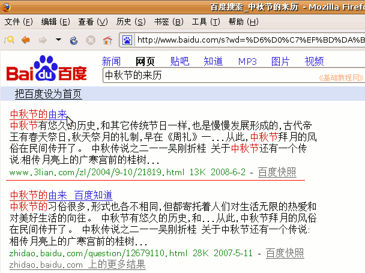
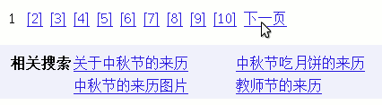
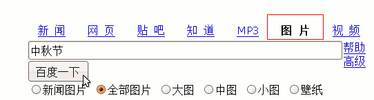
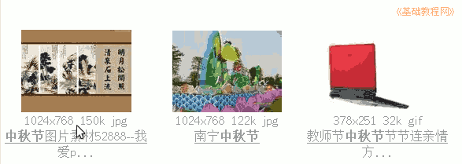
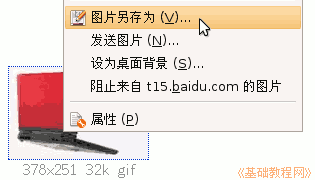
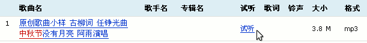
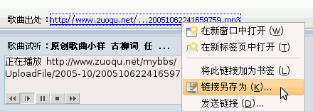

电脑操作基础
作者：TeliuTe 来源：基础教程网
三十五、网络搜索 返回目录 下一课当有时候我们需要到网上搜索一些资料，可以使用搜索工具来完成，下面我们来看一个练习；
1、搜索引擎
1）打开网页浏览器，在地址栏输入百度搜索的网址 www.baidu.com 然后点右边的转到按钮，或者按一下回车键；
谷歌搜索的网址是 www.g.cn 或者 www.google.cn
2）进入百度搜索页面后，在中间输入要搜索的资料名称，然后点右边的“百度一下”按钮，
中间输入的文字也称作“关键字”，尽量跟资料有关；
3）出来一个搜索结果页面，里面有许多项，点每一项的标题就可以进入相应的网页里，
；
每一项下边有内容简介，如果网页打不开，可以点右下角的“百度快照”，打开百度缓存的页面；
4）在页面最底下，有一个数字序列，如果这一页没找着，可以点到下一页继续查看；
；
下面的相关搜索，是推荐给你的其他关键字搜索，你也可以试试用它们搜索出来的内容；
2、图片和视频搜索
1）如果搜索的是图片，那么在开始的时候，先选中“图片”搜索，然后再点搜索按钮；

2）然后出来许多小图片，这是缩略图，图片下面有原始大小尺寸；

3）找着合适的，可以点击图片查看大图片，在图片上点右键可以选择“图片另存为”命令来保存图片；

4）视频搜索的方法跟图片类似，只是在最开始要选择“视频”，然后点搜索按钮；
5）音乐搜索的方法也类似，开始先选中“MP3”，输入关键词，还可以在下面点音乐格式，然后再点搜索按钮；
6）进入搜索结果页后，点右边的“试听”链接，出来一个播放器，稍等一会就可以听到音乐；

7）在播放器上面有一个蓝色链接地址，瞄准点右键，可以保存歌曲；
；
注意，如果播放器上提示“准备就绪”，说明音乐地址已经失效，可以试试别的搜索项；
本节学习了在Ubuntu中的基本操作，如果你成功地完成了练习，请继续学习下一课内容；本教程由86团学校TeliuTe制作|著作权所有，商业用途请与作者联系
基础教程网：http://teliute.org/
美丽的校园……
转载和引用本站内容，请保留版权信息和本站链接。